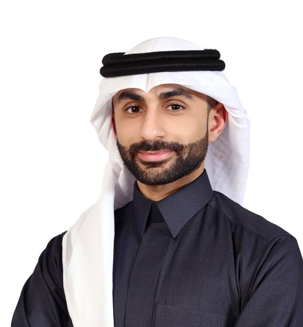
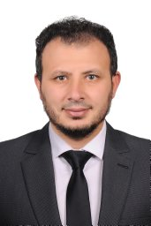
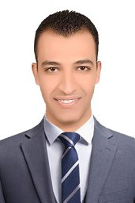

Academic website · research group

I lead a research group working at the intersection of smart structures, piezoelectricity, structural dynamics, metamaterials, energy harvesting, and wave manipulation. Our work combines analytical modeling, finite-element simulation, experiments, and programmable synthetic-impedance circuits to study tunable and multifunctional piezoelectric metastructures.
Open to highly motivated Ph.D. and M.S. students interested in metamaterials, vibrations, piezoelectric systems, wave control, and intelligent structural systems. Students with strong backgrounds in mechanics, FEM, controls, programming, and experiments are especially encouraged to get in touch.
Focus: acoustics and vibrations; minor in applied mathematics. Dissertation: Programmable Piezoelectric Metamaterials Leveraging Synthetic Impedance Circuits.
Thesis: Vibration of Axially Moving Small-Size Beams under Variable Electrostatic Force.
Student joins, conference presentations, and project milestones.
Search across journal papers and conference presentations.
Current grant-supported work in nonlocally resonant piezoelectric metamaterials.
This project develops analytical and finite-element models for nonlocally resonant electromechanical metamaterial beams, where unit cells interact beyond nearest neighbors through electrical coupling. The work studies roton-like dispersion, wave propagation, boundary-condition effects, and design guidelines for future fabrication and experiments.
The project examines how long-range electrical coupling in piezoelectric metamaterials reshapes dispersion and vibration response in both infinite and finite structures.
Core themes include PWEM-based dispersion analysis, COMSOL validation, local and nonlocal resonances, roton-like behavior, and future experimental realization.
This section can later be expanded with figures, milestones, grant outputs, and student contributions.
Courses taught from Fall 2023 through Spring 2026.
These browser-based plots are styled to match the site and are inspired by the uploaded JavaScript concepts for dispersion and transmissibility.
A lightweight interactive plot with controls for resonance frequency, coupling strength, and damping.
A two-panel visualization for the grading profile and its transmissibility response.
Principal investigator, postdoctoral researcher, and graduate students.
Piezoelectric metamaterials, structural dynamics, wave propagation, and energy harvesting.

Postdoctoral researcher in the group.

Auxetic metamaterials (topic under refinement).
Vibration attenuation enhancement in locally resonant acoustic metamaterials via Bayesian optimization.
Damage detection in vibrating structures using machine learning (topic under refinement).